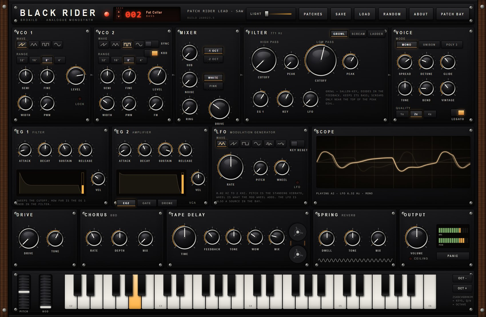
Two monosynths define the ground this instrument stands on. One is the Korg MS-20: a Sallen-Key filter with a pair of diodes in its feedback path, which keeps its bass when you turn the resonance up and, past the edge, squeals with harmonics — a thin, eerie, aggressive voice. The other is the Moog: a four-pole transistor ladder whose resonance is round, whose bass thins as the resonance rises, and which sings a clean sine when it takes off — the fat bass every record is built on.
Black Rider is not a copy of either. It is a new instrument that carries both filters and lets you decide, per patch, which circuit the sound goes through. Around them sit two oscillators built to behave like real analogue oscillators — not perfect ones — and a patch bay in the spirit of both the MS-20 and the Moog Grandmother, where the modules stop being wired for you and start being wired by you.
An offline bench renders real audio through the engine and checks the claims by Goertzel analysis and zero-crossing tracking. Both filters self-oscillate within 6 cents of their set cutoff across the range; at 2× and 4× oversampling every alias sits below −60 dB; with VINTAGE at zero the tuning wanders 0.07 cents and the output is dead silent with no note held, while at full VINTAGE it wanders a musical couple of cents. The instrument is warm because those numbers are warm, not because a label says so.
1. Load Black Rider as an instrument, or run the standalone. It answers your MIDI keyboard, and it has its own keyboard along the bottom with a pitch and a mod wheel.
2. Press PATCHES and pick one. BLACK BASS and ACID RIDER are the low end; RIDER LEAD and SCREAM SWEEP show off the Sallen-Key; THREE RIDERS and GHOST ORGAN are the polyphonic, stereo-spread patches; FEEDBACK HOWL is the old MS-20 trick wired through the bay.
3. Turn the two big CUTOFF knobs and the PEAK beside the low pass. Flip the filter between SCREAM and LADDER and hear the whole character change under the same setting.
4. Press PATCH BAY. The panel grows a wing to the right. Drag a cable from a red hole to a black one — the LFO into a cutoff, an envelope into a pitch. Roll the mouse wheel over a cable to set how much. Double-click it to pull it out.
5. Press RANDOM when you want a whole new machine, and SAVE when one is worth keeping.
Everything on the panel is one instrument, wired left to right: two oscillators and the extras are summed in the MIXER, the mix runs through the FILTER, the filter through the VCA, and the VCA through the effects to the output. The two envelopes and the LFO shape it; the patch bay lets you break that order wherever you like.
Each oscillator is a phase accumulator with polynomial band-limited steps and ramps, run oversampled, so a saw is a saw all the way up the keyboard without the digital grit of a naïve ramp. Four waves: saw, triangle, pulse (with width and PWM) and sine. RANGE sets the octave (32′ to 4′), SEMITONE and FINE the interval, LEVEL how much reaches the mixer.
What makes them sound like circuits is what they get wrong, on purpose, under VINTAGE: a slow temperature walk, a faster jitter, an exponential converter that goes slightly flat at the very top of its range the way a real one does, and per-voice component tolerances so a five-note chord is five slightly different synthesizers. Turn VINTAGE down and it is clean and stable; turn it up and it breathes.
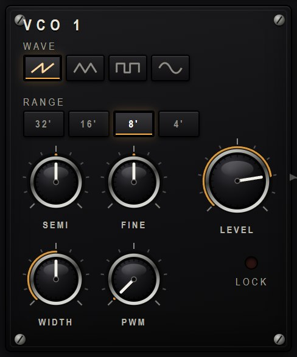
VCO 2 adds three things. SYNC hard-syncs it to VCO 1: the reset is band-limited by the actual size of the jump, so a swept sync is a clean, glassy tone, not a bag of aliases. FM is exponential modulation of VCO 2 by VCO 1 — small amounts are vibrato and growl, large amounts are bells and clangs. KBD lets you take VCO 2 off the keyboard so it holds a fixed pitch, a drone under the notes.
And when the two oscillators sit within a few cents of each other, VCO 2 is weakly pulled towards VCO 1 and the pair slowly falls into lock — exactly as two oscillators on one circuit board do. The LOCK lamp on VCO 1 lights when they have. VINTAGE sets how strong the pull is.
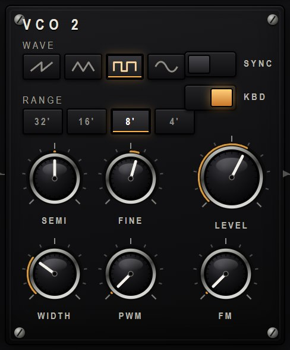
The MIXER sums the two oscillators and adds three things of its own: a SUB square one or two octaves below VCO 1 (it is divided off VCO 1's own edges, so it carries every wobble VCO 1 has); NOISE, white or pink; and RING, the ring modulation of the two oscillators. The whole sum passes through DRIVE, a saturating stage before the filter — this is where a monosynth gets its body, and turning it up thickens everything downstream.
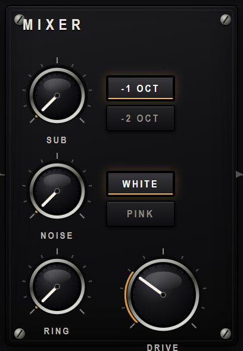
GROWL and SCREAM are the same two-pole Sallen-Key circuit — a diode clipper in its feedback path, solved as a zero-delay loop — the MS-20 idea. They keep their low end as PEAK rises. The difference is how hard PEAK pushes: GROWL only crosses into self-oscillation near the very top of the dial, so for most of the travel it is a gnarly, thin resonance; SCREAM crosses just past two o'clock and is then pushed far harder into the diodes, so the top of its dial is a loud, filthy howl. Because the oscillation is exactly at the cutoff and the filter tracks the keyboard through KEY, a SCREAM patch past the edge with KEY up is a playable oscillator in its own right — turn the oscillator LEVELs down and play the filter. LADDER is a four-pole transistor ladder with saturation in every stage; its resonance is round, its bass thins as PEAK rises, and it self-oscillates into a pure sine — the Moog voice. The same patch flipped between the three is three different instruments.
The filter has a full HIGH PASS (with its own PEAK) ahead of the LOW PASS, so you can hollow the sound out from both ends — a very MS-20 thing to do. Below the cutoffs sit the modulation trims: EG 1 (how far the filter envelope sweeps the cutoff, either direction), KEY (how much the cutoff tracks the note), and LFO.
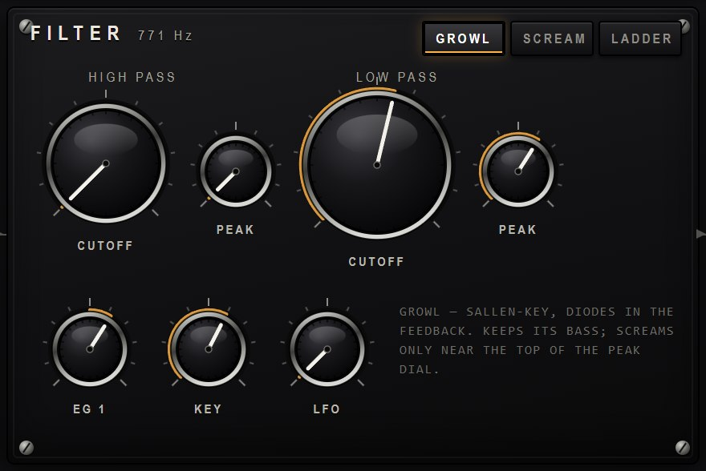
EG 1 is the filter envelope, EG 2 the amplifier envelope. Both are the analogue RC shapes — a fast-then-slowing attack, exponential decay and release — and a retrigger continues from wherever the envelope already is, never a click back to zero. VEL sets how much key velocity scales each one. The small window in each panel draws the shape and shows the live level.
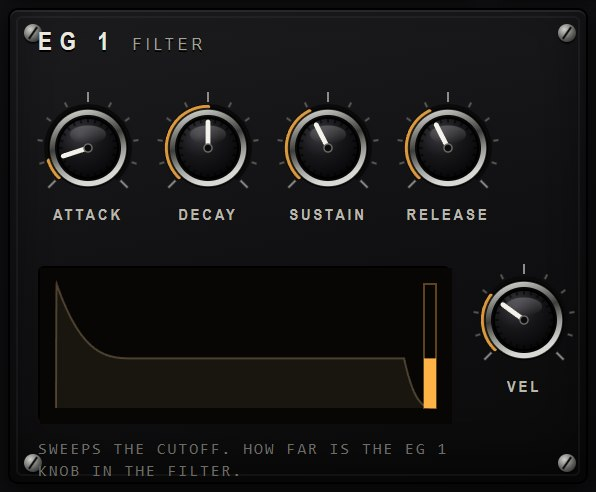
The VCA switch under EG 2 chooses what opens the amplifier: EG2 (the normal case), GATE (a hard on/off, for stabs and organ tones), or DRONE (always open — the synth makes sound with no note held, for the patch bay and for pads).
The LFO runs from 0.02 Hz to 2 kHz — slow enough for a minutes-long sweep, fast enough to be an audio-rate modulation source. Six shapes, including S&H and a smooth random DRIFT. PITCH is the standing vibrato it always applies; WHEEL is the vibrato your mod wheel adds on top; KEY RESET restarts its phase on each new note. The LFO is also a source in the patch bay, so it can reach anything.
The row along the bottom locks the LFO to the host clock: FREE leaves the RATE knob in charge; 1/1 to 1/16 are divisions of a bar at the song tempo, and T and D make the chosen division triplet or dotted. The tape delay has the same row.
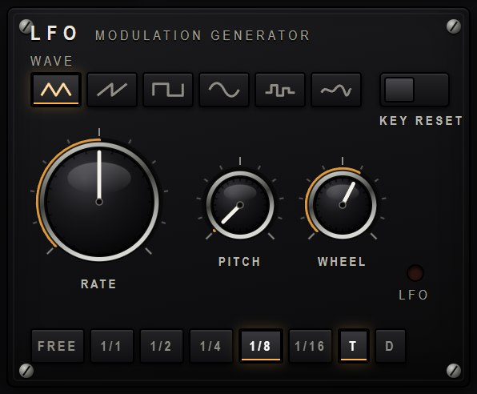
The MODE switch chooses MONO, UNISON (three voices on one note, detuned by DETUNE and fanned across the stereo field), or POLY 5 — five-note polyphony. It breaks the monosynth illusion a little, and it is worth it.
GLIDE is the portamento; LEGATO makes it, and the envelopes, only retrigger when you actually lift off between notes — the classic mono lead behaviour. TUNE and BEND set master tuning and the pitch-wheel range; VINTAGE is the master “how much circuit” control described earlier. QUALITY sets the oversampling — 2× is the sensible default, 4× for the most aggressive sync and FM.
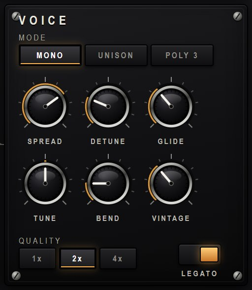
The red LED in the header is the SEED dial, and it runs from 000 to 199. Every one of those two hundred numbers is a patch: dialling it generates a complete sound — oscillators, filter, envelopes, effects, even patch-bay cables — from the number alone. The same number is always the same instrument, on any machine, in any project. Drag the digits, roll the wheel over them, or use the two arrows; RANDOM dials one at random.
The patches are honest about what they are, because each seed is given a category first and its parameters are then generated to fit — so the name and the category on the menu always match the sound. The PATCHES menu lists all two hundred grouped by category, with your twelve hand-made SIGNATURE patches at the top.
| Category | Count | What it makes |
|---|---|---|
| BASS | 26 | low, mono, EG-swept — the ladder's home ground |
| ACID | 12 | resonant, gliding, driven — the 303 idea |
| LEAD | 24 | mono leads with glide and vibrato |
| PLUCK | 20 | fast, short, percussive |
| PAD | 22 | slow, wide, chorused and sprung |
| STRINGS | 16 | unison, ensemble-chorused sections |
| ORGAN | 16 | drawbar tones, no filter sweep, fast gate |
| BRASS | 12 | the filter-swell brass staple |
| KEYS | 14 | bells and electric pianos |
| DRONE | 16 | self-sounding, evolving, no key needed |
| SYNC | 10 | hard-synced sweeps |
| NOISE | 12 | percussion and effects |
Press PATCH BAY and the panel grows a wing to the right. Eight cables, each from any source (a red hole — the oscillators, the noise, the filter or VCA output, the two envelopes, the LFO, the S&H, and every keyboard control) to any destination (a black hole — the pitches, the pulse widths, the cutoffs and peaks, the filter and VCA inputs, the LFO rate, the pan, the drive, the delay time).
Drag from a red hole to a black one to make a cable. Roll the mouse wheel over a cable to set the amount; negative amounts invert and draw as a dashed cord. Double-click a cable, or a patch point, to pull it out. A cable adds to whatever the front-panel knob is already doing — it never replaces it.
That is the whole point, and it is where the good accidents live. An oscillator into a cutoff is filter FM. An envelope into the delay time is a pitch-shifting echo. The LFO into its own rate is a runaway. And the VCA output back into the filter input is the famous MS-20 feedback patch — wired here in one cable (it is the FEEDBACK HOWL factory patch).
Cables are part of the patch: they save, they load, and they ride in the DAW project with everything else. Each patch point is a block of three holes, so up to three cables can share a source or a destination.
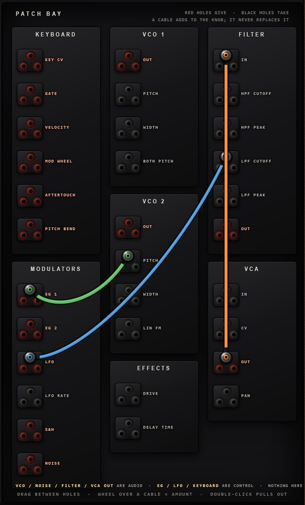
DRIVE is an asymmetric overdrive with a biased shaper, so it adds both even and odd harmonics — grit and thickness, with a TONE control to keep the top end under control. It runs oversampled, after the voices.
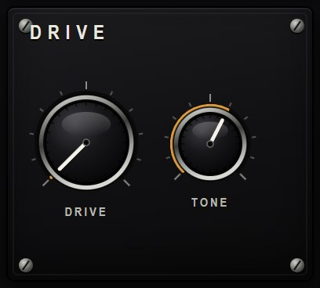
CHORUS is a bucket-brigade (BBD) chorus — a short modulated delay per side with the gentle high-frequency loss and the faint clock whisper of a real BBD chip. RATE, DEPTH, MIX. It is stereo, and it is what turns UNISON into a wall.
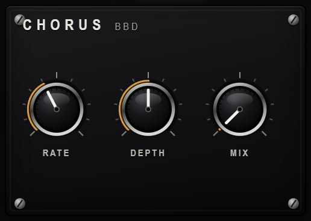
TAPE DELAY is a tape echo, not a clean digital one. TIME really does bend the pitch while you move it — the tape has to speed up or slow down to get there. FEEDBACK, a TONE that darkens each repeat, and WOW for the wow-and-flutter of a worn transport — a smooth wander, never a step. The sync row locks the time to the host clock (1/1 to 1/16, with triplet and dotted feels), and a tempo change bends the pitch of the repeats exactly as the TIME knob would. The reels on the panel turn while it runs.
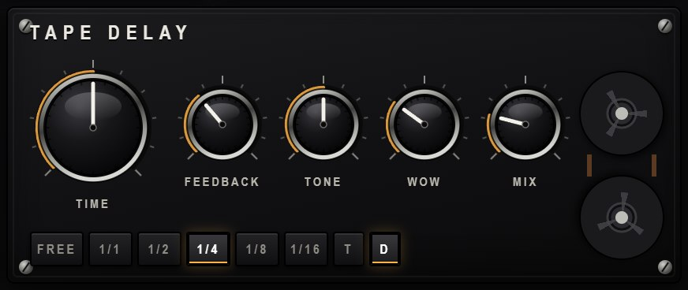
The spring reverb is built from three dispersive spring lines, each a long cascade of allpass sections. A real spring passes high frequencies faster than low ones, so every reflection arrives as a downward chirp — that unmistakable “boing”. Here the boing is the dispersion, not an EQ trick. DWELL is the decay, TONE the brightness, MIX the amount.
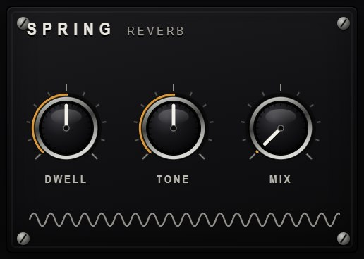
Every Brokild synth carries the same rack. Not a copy of it and not a similar one: the identical set of effects and characters, compiled into each instrument and saved inside each patch. Learn it here and you have learned it in all of them.
The globe on the panel opens it. What appears is two racks side by side — effects on the left, characters on the right — and they do very different things. An effect processes what the synth has already made. A character reaches back into the instrument and changes how it makes it.
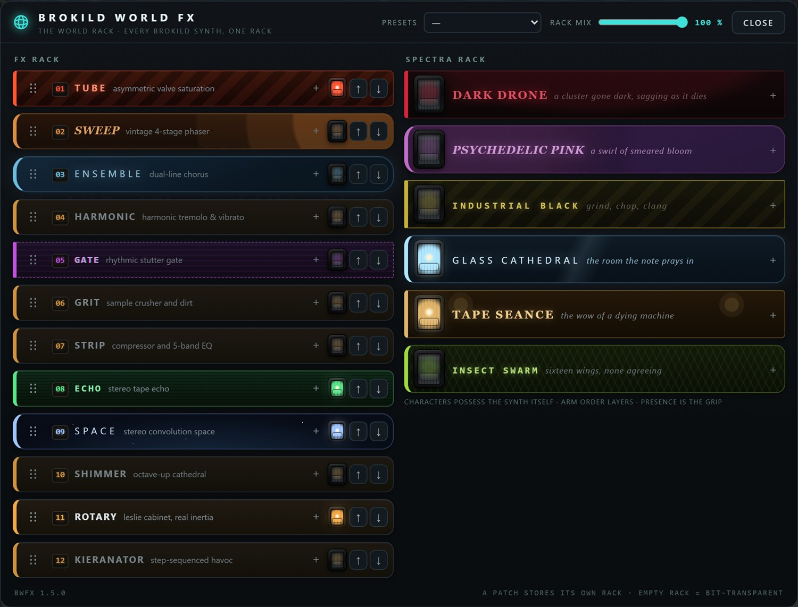
Nothing is on when you start, and an empty rack is not a bypass — it is an absence. The audio never enters it. A patch you made before the rack existed sounds exactly as it did, to the sample, and the plugin's own test bench checks that on every build.
Twelve, in the order they run: TUBE (asymmetric valve saturation, and its DRIVE holds its level as you turn it up, so the pedal gets dirtier rather than louder), SWEEP (four-stage phaser), ENSEMBLE (dual-line chorus), HARMONIC (the brownface split-band tremolo, plus plain tremolo and true vibrato), GATE (rhythmic stutter), GRIT (crusher and dirt), STRIP (compressor and five-band EQ), ECHO (stereo tape echo up to five seconds), SPACE (true convolution reverb), SHIMMER (a feedback network with the octave folded back into the loop), ROTARY (a Leslie with real inertia — the horn takes about a second to change its mind, the drum about four) and KIERANATOR (the step glitcher). ECHO, GATE and HARMONIC lock to the host clock.
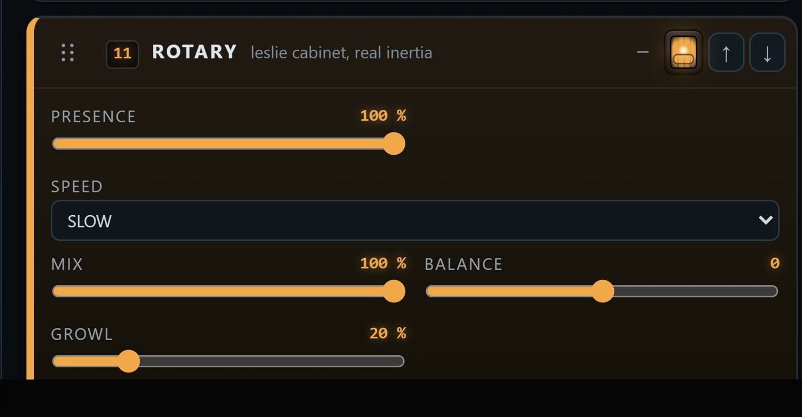
Drag a pedal by its grip to reorder the chain, or use the arrows. Reordering while sound is playing is safe: the rack dips through the change and comes back on the other side.
The right-hand rack is SPECTRA, and it does not process the sound — it possesses the instrument. A character reaches into the voices themselves: how far they drift out of tune with each other, how wide they sit, whether they breathe, whether they sag flat as they die, how dark the filter runs. Two synths under the same character do not sound alike. They sound like themselves, haunted the same way.
DARK DRONE is a cluster gone dark, with a drift that takes minutes to come round. PSYCHEDELIC PINK breathes the width, tuning and filter over a wash of phaser, chorus and reverse reverb it carries itself. INDUSTRIAL BLACK is grind, chop and clang. GLASS CATHEDRAL is a hall of its own and a breath on the tuning. TAPE SEANCE is the wow of a dying machine. INSECT SWARM is sixteen wings, none of them agreeing.
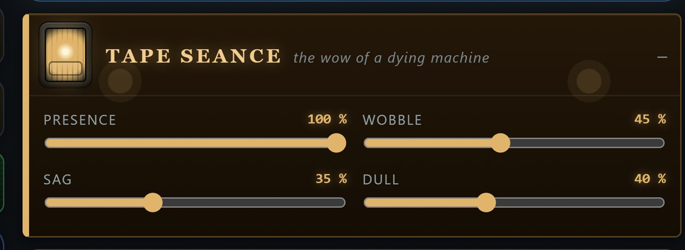
Characters stack: arm two and both take hold, in the order you armed them. Their pitch sag is keyed to each note's gate rather than its volume, so a held note stays in tune and only sinks as it dies. In Black Rider the characters get inside the two oscillators and the filter — the detuning spreads across the five voices, the sag is keyed to each note's gate, and a drone held open by the VCA never sags at all.
KIERANATOR keeps the last ten seconds of everything the synth has played, and every one of its effects is a different way of reading that buffer back. Paint a bar of sixteen steps with the brushes — RETRIG, TAPE STOP, REVERSE, SHUFFLE, PITCH, CRUSH, GATE — and it plays the pattern against the host's bars. The same brush again clears a step. With no host transport it free-runs on its own clock. It is named for the late Kieran Foster, whose Glitch made this kind of thing worth doing.
The rack belongs to the patch. Save a patch and its rack goes with it; load one from before the rack existed and it comes back rack-empty, which is exactly the sound it promised. The PRESETS menu in the header holds ten made-up racks to start from. And because the rack is shared code, every Brokild synth gets new modules and fixes on its next build — the effects are the same effects, wherever you opened them.
The keyboard along the bottom plays the synth with the mouse (click a key; the
vertical position sets velocity) or from your computer keyboard — the home row
Z S X D C V G B H N J M is an octave, Q and W
shift it down and up. The PITCH wheel springs back to centre; the MOD
wheel stays where you leave it and feeds the LFO's WHEEL amount. Both mirror your
hardware controller in real time, and both are sources in the patch bay.
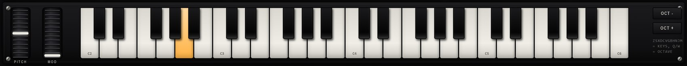
At the far right, OUTPUT has the master VOLUME, a stereo meter with RMS and peak, a CEILING lamp that lights when the transparent output limiter is catching a peak, and a PANIC button that silences every voice and resets the effects. A soft ceiling sits on the master unconditionally, so nothing here — not a screaming filter, not a feedback patch — can put a spike into your monitors.
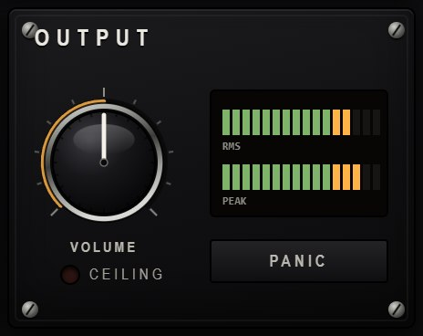
The LIGHT slider in the header lifts the panel's shadows without flattening its contrast, for a brighter room. ABOUT tells you whose fault all this is.
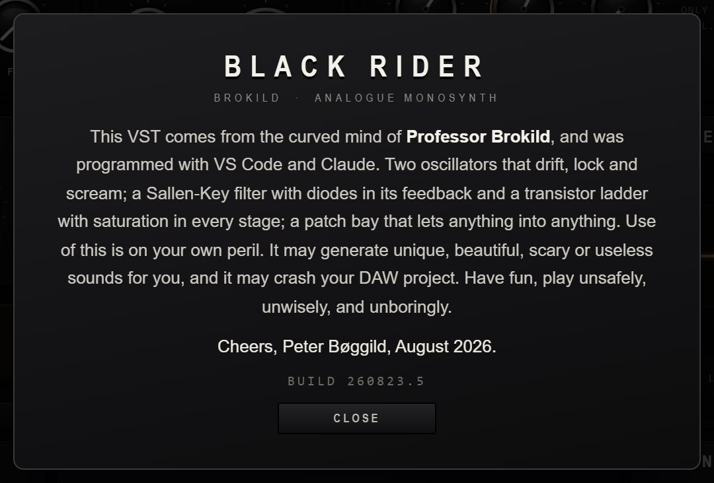
| Source (red) | What it is |
|---|---|
| VCO 1 / VCO 2 | the raw oscillator, audio — into a cutoff it is filter FM |
| NOISE | white noise, audio |
| FILTER OUT / VCA OUT | the signal after the filter, and after the amplifier |
| EG 1 / EG 2 | the filter and amplifier envelopes, 0–1 |
| LFO / S&H | the LFO, and noise sampled once per LFO cycle |
| KEY CV / VELOCITY / GATE | the note as a voltage, how hard it was hit, and whether a key is down |
| MOD WHEEL / AFTERTOUCH / PITCH BEND | the performance controls |
| Destination (black) | What it does |
|---|---|
| VCO1 / VCO2 / BOTH PITCH | oscillator pitch — an envelope here is a sync or bell sweep |
| VCO1 / VCO2 WIDTH | pulse width |
| VCO2 LIN FM | linear FM of VCO 2 — audio in here makes bells and metal |
| HPF / LPF CUTOFF, HPF / LPF PEAK | the filter frequencies and resonances |
| FILTER IN | audio straight into the filter — the feedback patch lives here |
| VCA CV / VCA IN | the amplifier's gain, and audio into it past the filter |
| LFO RATE | speeds or slows the LFO, up to four octaves either way |
| PAN / DRIVE / DELAY TIME | stereo position, the drive amount, and the tape time (which bends) |
.json files beside the plugin; the DAW project keeps its own full copy.